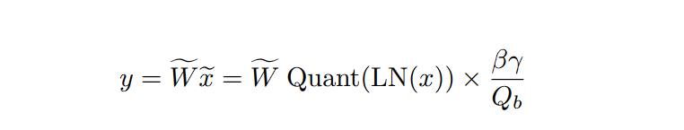

Transformer blocks are effectively really fancy affine transformations (applied with non-linearity) paired with a module that can compute feature interactions (attention) and a way to normalize the results (LayerNorm). While many attempts have been made to optimize these operations to maximize throughput (my lovely FlashAttention). The only real way to optimize the linear networks is to quantize the weights. The extent to which you can do this upto is 8-bits (INT8) at which point you will lose a lot of performance
The 1-bit pipe dream
BitLinear ackowledges this trade-off and takes the quantization down to a single bit. The core equation to bitlinear is the following: 
Yes, thats it. BitLinear is a bunch of affine transformations applied to a matrix (who would've thought). In all seriousness, the next few subsections will break this equation down and try implementing it.
Lowering the precision, and our expectations
Quantization is the process of lowering the bit precision to improve speeds and reduce memory consumption. I don't want to go too in depth about it, so readers can go through pytorch docs and this amazing article by Maarten Grootendorst to familiarze themselves with its concepts. What I will be doing is talk about its tradeoffs and go over absmax quantization, that was implemented in BitLinear.
Basically, every floating point number (FP32 for example) can be represented using three parts: Sign (1-bit), Exponent (8-bits), and Mantissa (23-bits). When we want to quantize this, we want to reduce the number of bits (effectively the range) for the exponent and mantissa, which would lead to lower precision numbers. FP32 can be quantized down to FP16 (5-bit exponent, 10-bit mantissa) INT8 and INT4. While the reduced number of bits means the overall model size will go down (not the number of parameters, but the amount of storage each parameter occupies in memory).
There are different types of quantization as well, that are applied during the different phases of the machine learning life-cycle. Quantization Aware Training is performed during training, meaning the models weights are actually aware that they're being quantized; whereas Post Training Quantization is applied after training (but to only a specific set of layers, check pytorch docs for further info). For BitLinear the authors chose to use QAT as it gives them more flexibility to experiment.